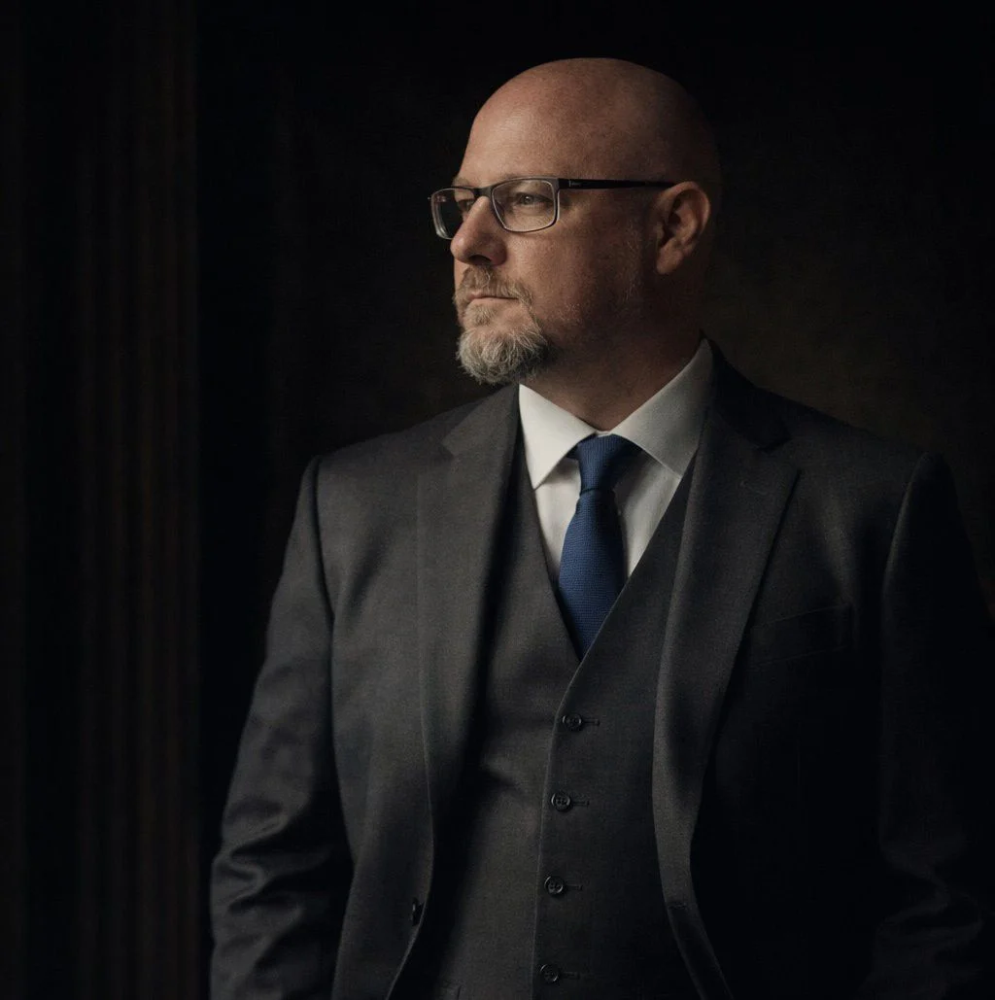

Daniel Verner – pojišťovací poradce
Pomáhám lidem zorientovat se v pojištění bez nátlaku a složitých formulací. Specializuji se na životní, úrazové a majetkové pojištění. Vše vysvětluji srozumitelně a férově – online nebo osobně.
Nezávazně mě kontaktujte